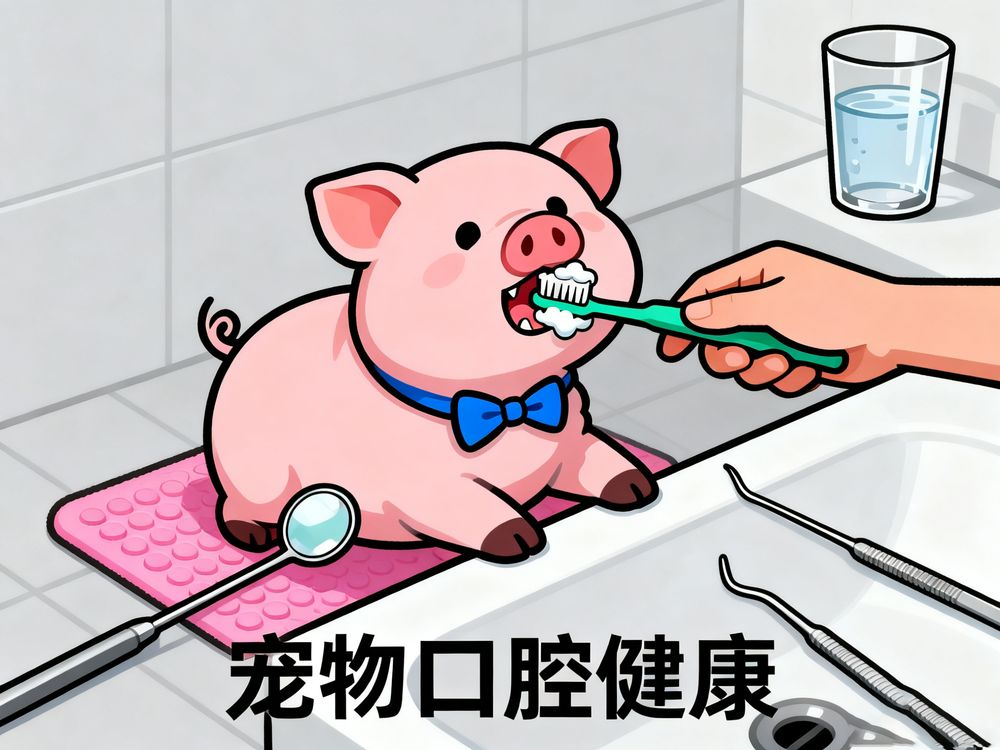

很多宠物主人忽视了宠物的口腔健康，实际上口腔问题可能导致更严重的健康问题。以下是关于宠物口腔健康的一些重要信息：
宠物的口腔问题不仅会导致口臭、牙龈红肿、牙齿脱落等局部症状，还可能引发全身性疾病，如心脏病、肾病、肝病等。
严重后果：口腔中的细菌可以通过血液循环进入体内，感染其他器官，长期的慢性炎症还会增加患某些疾病的风险。
宠物常见的口腔疾病包括牙周病、牙龈炎、口腔溃疡、牙齿折断等。
高发群体：老年宠物、小型犬种、特定品种的猫更容易出现口腔问题，需要特别关注。
定期刷牙是维护宠物口腔健康最有效的方法，此外还可以使用口腔清洁剂、洁牙棒等辅助产品。
专业护理：建议每年带宠物进行一次口腔检查，根据需要进行专业洁牙。
适当的饮食可以帮助维护宠物的口腔健康，如干粮可以帮助清除牙菌斑，而湿粮则可能增加口腔问题的风险。
建议：可以选择专门的口腔护理粮，或者在兽医的指导下调整饮食结构。
评论